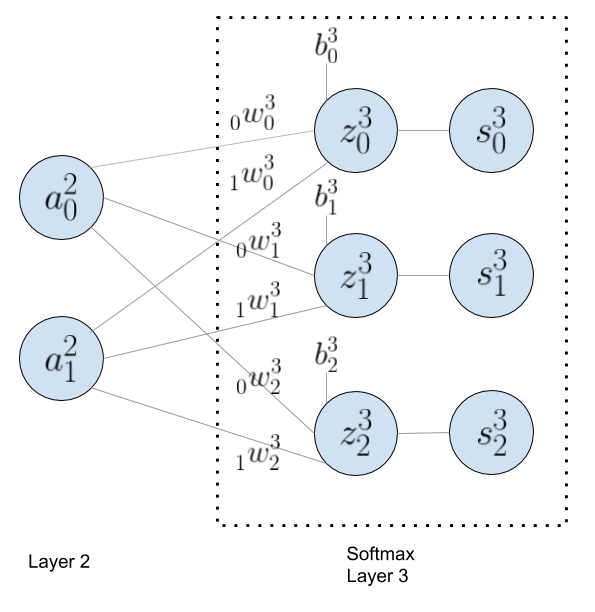

Multiclass logistic regression (Softmax) and its derivative
While watching a youtube video lecture, “Lecture 4.3 - The softmax output function”, taught by Geoffrey Hinton, I have noticed that he did not show steps to find the derivative of cross entropy cost function with respect to a variable, $z_{i}$, which resulted in $s_{i} - y_{i}$ in his lecture. For beginners in calculus, this was quite a mystery to find the final formula as shown below
$$\frac{\partial C}{\partial z_{i}} = \sum_{k}^{ } \frac{\partial C}{\partial s_{k}}\frac{\partial s_{k}}{\partial z_{i}} = s_{i} - y_{i}$$
where the cross entropy cost function is $$C = -\sum_{k}^{ } y_{k}ln(s_{k} )$$
So, I have decided to take this challenge, and as a result of my effort, I was able to describe detailed steps to find the derivative of cost function, and I hope this post is helpful for those who are not familiar with calculus (like me)
Before diving into the derivative of cross entropy cost function, let me start with a layer (Layer 2) of the neural network with 2 output nodes ($a_{0}^{2}$ and $a_{1}^{2}$ ) that feed to the last layer with 3 nodes during forward propagation. To illustrate the process, let me show you the diagram first:

Each node in the last layer represents a category, and its output (softmax activation or multiclass logistic regression) is the probability of being what is suggested. For example, the output of each node in the last layer indicates the probability of being either dog, cat or rabbit. If the output of the last layer is [0.7, 0.2, 0.1] , the probability of being a dog is 70%, 20% for cat and 10% for rabbit. Keep in mind that the sum of the probabilities of the all three nodes must be 1 (100%).
The notation used in this diagram can be a bit confusing, but it is necessary to keep track of elements when we do the matrix calculation. To clarify what each notation means, let me start with the first node ($a_{0}^{2}$) of the layer 2. The superscript means “layer”, in this case, Layer 2, and the subscript indicates “node number”, in this case, the first element or node 0 in Layer 2. For weight notation, there is another subscript in front of each weight value, which indicates what input node this weight value should be multiplied with. In this example, the weight, $_{0}^{ }w_{0}^{3}$ is multiplied with $a_{0}^{2}$ (input node) to calculate $z_{0}^{3}$.
The last forward propagation ($W\cdot A + B = Z$) can be represented in matrix as shown below. The dot product between 3x2 weight matix (layer 3) and 2x1 input matrix (layer 2) results in 3x1 matrix which is added to another 3x1 bias matrix to get the 3x1 matrix with z values. The resulting values in z matrix will be input parameters to the softmax activation function.
$$\begin{vmatrix} _{0}^{ }w_{0}^{3} & _{1}^{ }w_{0}^{3} \\ \\ _{0}^{ }w_{1}^{3} & _{1}^{ }w_{1}^{3} \\ \\ _{0}^{ }w_{2}^{3} & _{1}^{ }w_{2}^{3} \\ \end{vmatrix} \cdot \begin{vmatrix} a_{0}^{2} \\ \\ a_{1}^{2} \\ \end{vmatrix} + \begin{vmatrix} b_{0}^{3} \\ \\ b_{1}^{3} \\ \\ b_{2}^{3} \\ \end{vmatrix} = \begin{vmatrix} _{0}^{ }w_{0}^{3} \cdot a_{0}^{2} + _{1}^{ }w_{0}^{3} \cdot a_{1}^{2} + b_{0}^{3} \\ \\ _{0}^{ }w_{1}^{3} \cdot a_{0}^{2} + _{1}^{ }w_{1}^{3} \cdot a_{1}^{2} + b_{1}^{3} \\ \\ _{0}^{ }w_{2}^{3} \cdot a_{0}^{2} + _{1}^{ }w_{2}^{3} \cdot a_{1}^{2} + b_{2}^{3} \\ \end{vmatrix} = \begin{vmatrix} z_{0}^{3} \\ \\ z_{1}^{3} \\ \\ z_{2}^{3} \\ \end{vmatrix} $$
In this post, I don't think there is a need to explain the softmax activation (multiclass logistic regression) and cross entropy cost function since there are so many other sources that explain theses topics well, fortunately. By the way, my favorite machine learning lectures are from Andew Ng. For the derivative of the cost function with respect to $z_{i}$, we just need to know that the output of the softmax function represents the probability of what each output suggests (e.g., dog, cat or rabbit), that is a probability distribution over all posible outcomes (k). In the example of "dog, cat and rabbit" classification, the possible outcomes are 3 ($s_{0}^{3}$, $s_{1}^{3}$ and $s_{2}^{3}$).
$$ Softmax = S(z_{i}) = \frac{e^{z_{i}}}{\sum_{k}^{ }e^{z_{k}}} $$ $$ S = \begin{vmatrix} \frac{e^{z_{0}^{3}}}{e^{z_{0}^{3}} + e^{z_{1}^{3}} + e^{z_{2}^{3}}} \\ \\ \frac{e^{z_{1}^{3}}}{e^{z_{0}^{3}} + e^{z_{1}^{3}} + e^{z_{2}^{3}}} \\ \\ \frac{e^{z_{2}^{3}}}{e^{z_{0}^{3}} + e^{z_{1}^{3}} + e^{z_{2}^{3}}} \\ \end{vmatrix} =\begin{vmatrix} \frac{e^{z_{0}^{3}}}{\sum_{k=0}^{2 }e^{z_{k}}} \\ \\ \frac{e^{z_{1}^{3}}}{\sum_{k=0}^{2 }e^{z_{k}}} \\ \\ \frac{e^{z_{2}^{3}}}{\sum_{k=0}^{2 }e^{z_{k}}} \\ \end{vmatrix} = \begin{vmatrix} s_{0}^{3} \\ \\ s_{1}^{3} \\ \\ s_{2}^{3} \\ \end{vmatrix} $$
Let's assume that the output values at the end of forward propagation are :
$$ \hat{y} = s = \begin{vmatrix} s_{0}^{3} = 0.4\\ \\ s_{1}^{3} = 0.5\\ \\ s_{2}^{3} = 0.1 \end{vmatrix} $$
but, the actual data label for the image that the machine is trying to learn is :
$$ y_{i} = \begin{vmatrix} y_{0} = 1\quad (=dog)\\ \\ y_{1} = 0\quad (\neq cat)\\ \\ y_{2} = 0\quad (\neq rabbit) \end{vmatrix} $$
The predicted probability of being a dog is only 0.4 (40%), but the actual image is a dog (100%), in this example. So the cost function, $C$ should penalize the mistake with a really high value.
$$ C = \sum_{k}^{ }-{y}{_{k}}\cdot ln(\hat{y}{_{k}}) $$
$$ C=\sum_{k=0}^{2} -{y}{_{k}}\cdot ln(s{_{k}}) = -(1)\cdot ln(0.4) + -(0)\cdot ln(0.5) + -(0)\cdot ln(0.1) $$
$$ = -(1)\cdot (-0.916) = 0.916 $$
The objective of this post is to find the derivative (or gradient in vector notation) of cost function with respect to $z_{i}$, but in machine learning, you need to find the derivative of cost function with respect to weights and biases (parameters). Since there are multiple parameters in this case, finding partial derivative of cost function with respect to each paramter is more accurate statement. The opposite direction of gradient vector (derivative of cost function) points to the steepest descent, which is the basis of gradient descent algorithm for machine learning. Let's find the gradient.
The first step is to define the derivative of cost function as shown below.
$$\frac{\partial C}{\partial z_{i}} = \sum_{k}^{ } \frac{\partial C}{\partial s_{k}}\frac{\partial s_{k}}{\partial z_{i}}$$
By using the chain rule of calculus ($\frac{\mathrm{d}y}{\mathrm{d}x} = \frac{\mathrm{d}y}{\mathrm{d}u}\frac{\mathrm{d}u}{\mathrm{d}x}$), the process can be divided in two parts: $\frac{\partial C}{\partial s_{k}}$ and $\frac{\partial s_{k}}{\partial z_{i}}$. First, let's focus on the derivative of cost function with respect to $s_{k}$ values. Since the cost function, $C=\sum_{k}^{ } -{y}{_{k}}\cdot ln(s{_{k}})$ is in $f = ln(x)$ format (where its derivative is ${f}' = \frac{1}{x}$), the derivative of cost function with respect to $s_{k}$ can be expressed in :
$$ \frac{\partial C}{\partial s_{k}} = \left\{\begin{matrix} -y_{i}\cdot \frac{1}{s_{i}}\qquad when\: i \\ \\ \sum_{k\neq i} -y_{k\neq i}\cdot \frac{1}{s_{k\neq i}}\quad when\: k \neq i \end{matrix}\right. $$
In the example of "dog, cat and rabbit" classification above, the cost function can be expressed in both (a) and (b). The scenario (a) is when the actual image is a dog ($y_{i=0}$ = dog), therefore, $i = 0$, and (b) is when remaining values are cat ($y_{i=1}$ = cat) and rabbit ($y_{i=2}$ = rabbit), consequently, $i \neq 0$, which is expressed in (b). In previous formula, the summation notation ($\sum_{k\neq i} $) was used to represent when $k\neq i$.
$$ C = \sum_{k}^{ }-{y}{_{k}}\cdot ln(\hat{y}{_{k}}) = \begin{vmatrix} \left.\begin{matrix} -y_{i=0}\cdot ln(s_{i=0}^{3}) \end{matrix}\right\}\qquad when\: i = 0 \quad (a) \\ \\ \left.\begin{matrix} -y_{i=1}\cdot ln(s_{i=1}^{3}) \\ \\ -y_{i=2}\cdot ln(s_{i=2}^{3}) \end{matrix}\right\}\qquad when\: i \neq 0 \quad (b) \end{vmatrix} $$
Based on this example, you can define the derivative of cost function with respect to $z_{0}^{3}$, $z_{1}^{3}$ and $z_{2}^{3}$ as follows:
$$ \begin{align*} \frac{\partial C}{\partial z_{i}} &= \sum_{k}^{ } \frac{\partial C}{\partial s_{k}}\frac{\partial s_{k}}{\partial z_{i}} \qquad where \quad \frac{\partial C}{\partial s_{k}} = \left\{\begin{matrix} -y_{i}\cdot \frac{1}{s_{i}}\qquad when\: i \\ \\ \sum_{k\neq i} -y_{k\neq i}\cdot \frac{1}{s_{k\neq i}}\quad when\: k \neq i \end{matrix}\right. \\ \\ &= (-y_{i}\cdot \frac{1}{s_{i}}\cdot \frac{\partial s_{i}}{\partial z_{i}}) + (\sum_{k\neq i} -y_{k\neq i}\cdot \frac{1}{s_{k\neq i}}\cdot \frac{\partial s_{k\neq i}}{\partial z_{i}}) \\ \\ &= (A) + (B) \end{align*} $$
Let's start with $\frac{\partial C}{\partial s_{k}}$:
$$ \begin{align*} \frac{\partial C}{\partial z_{0}^{3}} = \sum_{k=0}^{2} \frac{\partial C}{\partial s_{k}}\frac{\partial s_{k}}{\partial z_{0}^{3}} &= (A) + (B) \\ &= ( -y_{0}\cdot \frac{1}{s_{0}^{3}}\cdot \frac{\partial s_{0}^{3}}{\partial z_{0}^{3}} ) + ( -y_{1}\cdot \frac{1}{s_{1}^{3}}\cdot \frac{\partial s_{1}^{3}}{\partial z_{0}^{3}} + -y_{2}\cdot \frac{1}{s_{2}^{3}}\cdot \frac{\partial s_{2}^{3}}{\partial z_{0}^{3}} ) \\ \end{align*} $$
$$ \begin{align*} \frac{\partial C}{\partial z_{1}^{3}} = \sum_{k=0}^{2} \frac{\partial C}{\partial s_{k}}\frac{\partial s_{k}}{\partial z_{1}^{3}} &= (A) + (B) \\ &= ( -y_{1}\cdot \frac{1}{s_{1}^{3}}\cdot \frac{\partial s_{1}^{3}}{\partial z_{1}^{3}} ) + ( -y_{0}\cdot \frac{1}{s_{0}^{3}}\cdot \frac{\partial s_{0}^{3}}{\partial z_{1}^{3}} + -y_{2}\cdot \frac{1}{s_{2}^{3}}\cdot \frac{\partial s_{2}^{3}}{\partial z_{1}^{3}} ) \\ \end{align*} $$
$$ \begin{align*} \frac{\partial C}{\partial z_{2}^{3}} = \sum_{k=0}^{2} \frac{\partial C}{\partial s_{k}}\frac{\partial s_{k}}{\partial z_{2}^{3}} &= (A) + (B) \\ &= ( -y_{2}\cdot \frac{1}{s_{2}^{3}}\cdot \frac{\partial s_{2}^{3}}{\partial z_{2}^{3}} ) + ( -y_{0}\cdot \frac{1}{s_{0}^{3}}\cdot \frac{\partial s_{0}^{3}}{\partial z_{2}^{3}} + -y_{1}\cdot \frac{1}{s_{1}^{3}}\cdot \frac{\partial s_{1}^{3}}{\partial z_{2}^{3}} ) \\ \end{align*} $$
Because of summation notation, the whole process of finding derivative of cost function in generalized format has been confusing for me to visualize detailed steps. It may be easier for trained mathematicians or engineers, but for beginners in calculus, using a small sample (3 categories) instead of summation is a better way to understand the process as you can see from above. Keep in mind that this is my personal opinion ;)
Now, let's find the derivative of softmax, $\frac{\partial s_{k}}{\partial z_{i}}$ with respect to a $z_{i}$ value to complete the objective. The softmax activation function is in $f = \frac{g}{h}$ format where its derivative is ${f}' = \frac{{g}'h - {h}'g}{h^{2}}$.
$$ s_{i} = s(z_{i}) = \frac{g}{h} =\frac{e^{z_{i}}}{\sum_{k}^{ }\ e^{z_{k}}} $$
The derivative of softmax function with respect to a $z_{i}$ can be expressed in:
$$ \frac{\partial s_{k}}{\partial z_{i}} = \left\{\begin{matrix} \frac{\partial s_{k=i}}{\partial z_{i}} = \frac{{g}'h - {h}'g}{h^{2}} = \frac{(e^{z_{i}})\cdot (\sum_{k}^{} e^{z_{k}}) - (e^{z_{i}})\cdot (e^{z_{i}})}{ (\sum_{k}^{ } e^{z_{k}})^2} \qquad when\: k = i \\ \\ \frac{\partial s_{k\neq i}}{\partial z_{i}} = \frac{{g}'h - {h}'g}{h^{2}} = \sum_{k\neq i}^{ } \frac{(e^{z_{k\neq i}})\cdot (\sum_{k}^{} e^{z_{k}}) - (e^{z_{i}})\cdot (e^{z_{k\neq i}})}{ (\sum_{k}^{ } e^{z_{k}})^2} \qquad when\: k \neq i \end{matrix}\right. $$
Don't worry about this formula at this time. It will be clear to you when I resume from the last step of the example of "dog, cat and rabbit" classification above.
Let's start with $\frac{\partial C}{\partial z_{0}^{3}} = \sum_{k=0}^{2} \frac{\partial C}{\partial s_{k}}\frac{\partial s_{k}}{\partial z_{0}^{3}}$ where $\sum_{k=0}^{2} \frac{\partial s_{k}}{\partial z_{0}^{3}}$ are $\frac{\partial s_{0}^{3}}{\partial z_{0}^{3}}$, $\frac{\partial s_{1}^{3}}{\partial z_{0}^{3}}$ and $\frac{\partial s_{2}^{3}}{\partial z_{0}^{3}}$. Keep in mind that in this case, we are trying to find the derivative of cost funciton with respect to a $z_{0}^{3}$; therefore, $i$ is equal to 0:
$$ \begin{align*} \frac{\partial C}{\partial z_{0}^{3}} = \sum_{k=0}^{2} \frac{\partial C}{\partial s_{k}}\frac{\partial s_{k}}{\partial z_{0}^{3}} &= (A) + (B) \\ &= ( -y_{0}\cdot \frac{1}{s_{0}^{3}}\cdot \mathbf{\frac{\partial s_{0}^{3}}{\partial z_{0}^{3}}} ) + ( -y_{1}\cdot \frac{1}{s_{1}^{3}}\cdot \mathbf{\frac{\partial s_{1}^{3}}{\partial z_{0}^{3}}} + -y_{2}\cdot \frac{1}{s_{2}^{3}}\cdot \mathbf{\frac{\partial s_{2}^{3}}{\partial z_{0}^{3}}} ) \\ \end{align*} $$
When $k = i$ (consequently, $k = 0$),
$$ \begin{align*} \frac{\partial s_{0}^{3}}{\partial z_{0}^{3}} &= \frac{(e^{z_{0}^{3}})\cdot (\sum_{k=0}^{2} e^{z_{k}}) - (e^{z_{0}^{3}})\cdot (e^{z_{0}^{3}})}{ (\sum_{k=0}^{2} e^{z_{k}})^2} \qquad when\: g = e^{z_{0}^{3}},\quad {g}' = e^{z_{0}^{3}} \: and\: h = \sum_{k}^{} e^{z_{k}},\quad {h}' = e^{z_{0}^{3}} \\ \\ &= \frac{(e^{z_{0}^{3}})\cdot \cancel{(\sum_{k=0}^{2} e^{z_{k}})}}{(\sum_{k=0}^{2} e^{z_{k}})\cdot \cancel{(\sum_{k=0}^{2} e^{z_{k}})}} - \frac{(e^{z_{0}^{3}})\cdot (e^{z_{0}^{3}})}{(\sum_{k=0}^{2} e^{z_{k}})\cdot (\sum_{k=0}^{2} e^{z_{k}})} \\ \\ &= \frac{e^{z_{0}^{3}}}{\sum_{k=0}^{2} e^{z_{k}}}\cdot (1- \frac{e^{z_{0}^{3}}}{\sum_{k=0}^{2} e^{z_{k}}}) \\ \\ &= \mathbf{s_{0}^{3}\cdot (1- s_{0}^{3})} \end{align*} $$
By the way, the reason, $h = \sum_{k=0}^{2} e^{z_{k}},\quad {h}' = e^{z_{0}^{3}}$ is that $\sum_{k=0}^{2} e^{z_{k}}$ is equal to $e^{z_{0}^{3}} + e^{z_{1}^{3}} + e^{z_{2}^{3}}$. Since I am going to find the derivative of h (${h}'$) with respect to a $e^{z_{0}^{3}}$, $e^{z_{1}^{3}}$ and $e^{z_{2}^{3}}$ are treated as constants, thus resulting in ${h}' = e^{z_{0}^{3}} + 0 + 0$
When $k \neq i$ (consequently, $k = 1$ and $k = 2$),
$$ \begin{align*} \frac{\partial s_{1}^{3}}{\partial z_{0}^{3}} &= \frac{0\cdot (\sum_{k=0}^{2} e^{z_{k}}) - (e^{z_{0}^{3}})\cdot (e^{z_{1}^{3}})}{ (\sum_{k=0}^{2} e^{z_{k}})^2} \qquad when\: g = e^{z_{1}^{3}},\quad {g}' = 0\quad because\: e^{z_{1}^{3}}\: is\: constant \: and\: h = \sum_{k}^{} e^{z_{k}},\quad {h}' = e^{z_{0}^{3}} \\ \\ &= \frac{- (e^{z_{0}^{3}})\cdot (e^{z_{1}^{3}})}{ (\sum_{k=0}^{2} e^{z_{k}})\cdot (\sum_{k=0}^{2} e^{z_{k}})} \\ \\ &= \mathbf{-s_{0}^{3}\cdot s_{1}^{3}} \end{align*} $$
$$ \begin{align*} \frac{\partial s_{2}^{3}}{\partial z_{0}^{3}} &= \frac{0\cdot (\sum_{k=0}^{2} e^{z_{k}}) - (e^{z_{0}^{3}})\cdot (e^{z_{2}^{3}})}{ (\sum_{k=0}^{2} e^{z_{k}})^2} \qquad when\: g = e^{z_{2}^{3}},\quad {g}' = 0\quad because\: e^{z_{2}^{3}}\: is\: constant \: and\: h = \sum_{k}^{} e^{z_{k}},\quad {h}' = e^{z_{0}^{3}} \\ \\ &= \frac{- (e^{z_{0}^{3}})\cdot (e^{z_{2}^{3}})}{ (\sum_{k=0}^{2} e^{z_{k}})\cdot (\sum_{k=0}^{2} e^{z_{k}})} \\ \\ &= \mathbf{-s_{0}^{3}\cdot s_{2}^{3}} \end{align*} $$
Since we found all three derivatives, $\frac{\partial s_{0}^{3}}{\partial z_{0}^{3}}$, $\frac{\partial s_{1}^{3}}{\partial z_{0}^{3}}$ and $\frac{\partial s_{2}^{3}}{\partial z_{0}^{3}}$, let's plug them to the formula:
$$ \begin{align*} \frac{\partial C}{\partial z_{0}^{3}} = \sum_{k=0}^{2} \frac{\partial C}{\partial s_{k}}\frac{\partial s_{k}}{\partial z_{0}^{3}} &= (A) + (B) \\ &= ( -y_{0}\cdot \frac{1}{s_{0}^{3}}\cdot \mathbf{\frac{\partial s_{0}^{3}}{\partial z_{0}^{3}}} ) + ( -y_{1}\cdot \frac{1}{s_{1}^{3}}\cdot \mathbf{\frac{\partial s_{1}^{3}}{\partial z_{0}^{3}}} + -y_{2}\cdot \frac{1}{s_{2}^{3}}\cdot \mathbf{\frac{\partial s_{2}^{3}}{\partial z_{0}^{3}}} ) \\ \\ &= ( -y_{0}\cdot \frac{1}{\cancel{s_{0}^{3}}}\cdot \mathbf{\cancel{s_{0}^{3}}\cdot (1- s_{0}^{3})} ) + ( -y_{1}\cdot \frac{1}{\cancel{s_{1}^{3}}}\cdot (\mathbf{-s_{0}^{3}\cdot \cancel{s_{1}^{3}}}) + -y_{2}\cdot \frac{1}{\cancel{s_{2}^{3}}}\cdot (\mathbf{-s_{0}^{3}\cdot \cancel{s_{2}^{3}}}) ) \\ \\ &= -y_{0} + y_{0}\cdot s_{0}^{3} + y_{1}\cdot s_{0}^{3} + y_{2}\cdot s_{0}^{3} \\ \\ &= s_{0}^{3}\cdot (y_{0} + y_{1} + y_{2}) - y_{0} \\ \\ &= \mathbf{s_{0}^{3} - y_{0}} \end{align*} $$
The reason, $s_{0}^{3}\cdot (y_{0} + y_{1} + y_{2}) = s_{0}^{3}\cdot {1}$, is that the sum of $y_{0}$, $y_{1}$ and $y_{2}$ is 1 as previously explained. See below to refresh your memory.
$$ y_{i} = \begin{vmatrix} y_{0} = 1\quad (=dog)\\ \\ y_{1} = 0\quad (\neq cat)\\ \\ y_{2} = 0\quad (\neq rabbit) \end{vmatrix} $$
The journey to find the derivative of cross entropy cost function with respect to a variable, $z_{i}$ ($\frac{\partial C}{\partial z_{i}} = \sum_{k}^{ } \frac{\partial C}{\partial s_{k}}\frac{\partial s_{k}}{\partial z_{i}} = s_{i} - y_{i}$), has almost come to an end. Let me write down the derivative of cost function with respect to $\frac{\partial C}{\partial z_{1}^{3}}$ and $\frac{\partial C}{\partial z_{2}^{3}}$. There is no need to describe detailed steps since both steps are identical to $\frac{\partial C}{\partial z_{0}^{3}}$.
$$ \frac{\partial C}{\partial z_{1}^{3}} = \mathbf{s_{1}^{3} - y_{1}} \\ \\ $$
$$ \frac{\partial C}{\partial z_{2}^{3}} = \mathbf{s_{2}^{3} - y_{2}} \\ \\ $$
Finally, let's generalize the formula to find $\frac{\partial C}{\partial z_{i}} = \sum_{k}^{ } \frac{\partial C}{\partial s_{k}}\frac{\partial s_{k}}{\partial z_{i}} = s_{i} - y_{i}$.
$$ \begin{align*} \frac{\partial C}{\partial z_{i}} &= \sum_{k}^{ } \frac{\partial C}{\partial s_{k}}\frac{\partial s_{k}}{\partial z_{i}} \qquad where \quad \frac{\partial C}{\partial s_{k}} = \left\{\begin{matrix} -y_{i}\cdot \frac{1}{s_{i}}\qquad when\: i \\ \\ \sum_{k\neq i} -y_{k\neq i}\cdot \frac{1}{s_{k\neq i}}\quad when\: k \neq i \end{matrix}\right. \\ \\ &= (-y_{i}\cdot \frac{1}{s_{i}}\cdot \frac{\partial s_{i}}{\partial z_{i}}) + (\sum_{k\neq i} -y_{k\neq i}\cdot \frac{1}{s_{k\neq i}}\cdot \frac{\partial s_{k\neq i}}{\partial z_{i}}) \qquad where \quad \left\{\begin{matrix} \frac{\partial s_{k=i}}{\partial z_{i}} = \frac{{g}'h - {h}'g}{h^{2}} = \frac{(e^{z_{i}})\cdot (\sum_{k}^{} e^{z_{k}}) - (e^{z_{i}})\cdot (e^{z_{i}})}{ (\sum_{k}^{ } e^{z_{k}})^2} = s_{i}\cdot (1 - s_{i}) \qquad when\: k = i \\ \\ \frac{\partial s_{k\neq i}}{\partial z_{i}} = \frac{{g}'h - {h}'g}{h^{2}} = \sum_{k\neq i}^{ } \frac{(e^{z_{k\neq i}})\cdot (\sum_{k}^{} e^{z_{k}}) - (e^{z_{i}})\cdot (e^{z_{k\neq i}})}{ (\sum_{k}^{ } e^{z_{k}})^2} = -s_{i}\cdot s_{k\neq i} \qquad when\: k \neq i \end{matrix}\right. \\ \\ &= (-y_{i}\cdot \frac{1}{\cancel{s_{i}}}\cdot \cancel{s_{i}}\cdot (1 - s_{i})) + (\sum_{k\neq i} -y_{k\neq i}\cdot \frac{1}{\cancel{s_{k\neq i}}}\cdot -s_{i}\cdot \cancel{s_{k\neq i}}) \\ \\ &= -y_{i} + y_{i}\cdot s_{i} + \sum_{k\neq i} -y_{k\neq i}\cdot (-s_{i}) \\ \\ &= -y_{i} + s_{i}\cdot (y_{i} + \sum_{k\neq i} y_{k\neq i}) \qquad where\quad y_{i} + \sum_{k\neq i} y_{k\neq i} = \sum_{k} y_{k} = 1 \quad e.g.,\: [dog=1, cat=0, rabbit=0] \\ \\ &= \mathbf{s_{i} - y_{i}} \end{align*} $$
Hooray!!! Finally, we made it. It took me awhile to understand the derivative of cross entropy function, but defintely, with an example of 3 categories classification, I was able to explain the whole process with confident. See you next time.